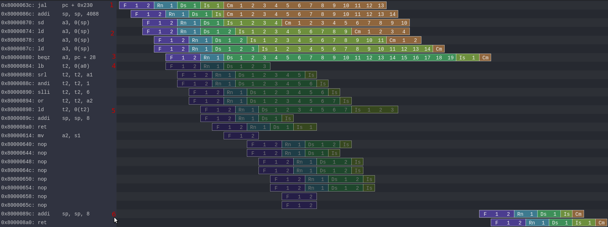

Security¶
Side channel attack¶
You can find an example of side channel attack here (need NaxRiscv hardware protection to be disabled): https://github.com/SpinalHDL/NaxSoftware/tree/main/baremetal/side_channel/src https://github.com/SpinalHDL/NaxSoftware/blob/main/baremetal/side_channel/src/side_channel.S
It allows in user mode to read the data from the supervisor. Bypassing page fault.
It is based on a few things
Speculative execution
Load page fault still writting in the register file the readed value
Load dependencies being waked up by the load cache hit predictor
Using that rogue value to produce a cache line refill
Mesuring which cache line is loaded to figure out the secret value
The image bellow show the execution of the attack (in grayish color is the speculative execution which wasn’t commited) :
Call the attack function
Execute some slow code (store -> load value forwarding) to delay the commit / flush of the pipeline
Having a misspredicted branch to avoid commiting the faulty code
Attacking the supervisor memory with a load
Producing a cache load at an address which depend on the readed supervisor memory (mem[(data >> bitId) << 6]
Back on track, the cpu rolled back all the speculative execution, but the step 5 got a specific cache line loaded
Then after that execution, mesuring which cache line is loaded will tell use the value of the secret bit from supervisor
How to reproduce¶
Follow https://github.com/SpinalHDL/NaxRiscv/tree/main/src/test/cpp/naxriscv#how-to-setup-things but with a few modification :
Before sbt “runMain naxriscv.Gen”, edit sideChannels to true (https://github.com/SpinalHDL/NaxRiscv/blob/95b1cc8e5c69d3a2fe12af8f7478a2492971a0d1/src/main/scala/naxriscv/Gen.scala#L435)
Instead of sbt “runMain naxriscv.Gen”, run sbt “runMain naxriscv.Gen64”
Once that whole setup is done, you can run the simulation via :
obj_dir/VNaxRiscv --name play --load-elf ../../../../ext/NaxSoftware/baremetal/side_channel/build/rv64ima/side_channel.elf --start-symbol _start --pass-symbol pass --fail-symbol fail
You can add some arguments to generate log files in the output folder (will slow down things) via :
–trace –trace-ref –trace –trace-ref –spike-debug